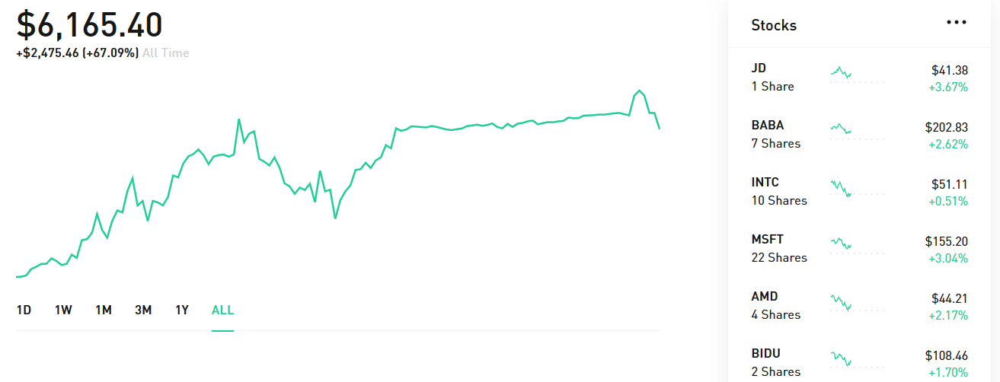

Posted on March 10, 2020
Robinhood is a brokerage service that offers commission free stock trading. Commissions are the the small fee that brokers take when you buy or sell a stock (brokers/brokerages are the agents or corporations who actually go and make stock trades on some market for you). Robinhood has created an extremely efficient business model where they are able to make money without these pesky fees. If your curious, they do so by taking interest from the cash customers have that is sitting in your Robinhood account, much like a bank collects interest on cash deposits as well as rebates from market makers and trading venues. But really everyone in the brokerage games takes these interest and rebates, and the real reason that Robinhood is able to sustain this business model is that they have such little overhead compared to massive institutions like Vanguard, Ally Invest, or large banks like JP Morgan, Wells Fargo, Goldman Sachs, etc.
You (and me) get a free stock if you sign up with my referral link.
So I'll admit, there is an ulterior motive to me writing this article. If you use my referral link (https://join.robinhood.com/patricp394) to sign up to Robinhood, we both get a free random stock! Robinhood is entirely free to create an account, trade stocks, trade cryptocurrencies, or trade options. But if you aren't interested in any of this, you can literally make an account, put 10$ in, get your free stock, sell the stock, and then take out $20, never to use Robinhood again. Definitely not the worst use of 30 minutes if you have nothing better to do, though again I would recommend at least dipping your toe in the water with stock trading if you haven't already for some reasons I will get into. (If your also interested in why Robinhood offers the free stock referral program it's because they spend very little money on advertising, and this is one of their primary ways of getting new users).
Above is a quick snapshot of my stock trading portfolio. My overall portfolio growth is shown in the graph and some of the stocks I own are listed on the right. I am a fan of fundamental analysis and investing in individual companies as you can see (with a big bias towards tech companies). However, for individuals who want less risk and volatility, investing in ETF's and mutual funds might be best for you. What these are is basically a way of investing a tiny bit in many different companies (maybe tens, hundreds, or thousands). This way, even if there are some losers, they will average out with the winners, and the growth of the ETF or mutual fund will reflect the whole state of the economy. (There are also industry specific ETF's, so for example if you thought the tech industry was on the rise you could by an ETF that is like buying a tiny bit of many different tech companies specifically.)
Now I'll give a quick pitch for why you ought to invest at least some of your money in stocks. You may be skeptical of investing in stocks. Maybe you believe that the economy won't grow, maybe you think some president will manage to run our country to the ground, maybe you think that AI will destroy the world. Here is why even the wise risk-averse and maybe not very wealthy individual should still invest in stocks. There is an important concept in economics called inflation. Inflation is the general increase in prices and fall of purchasing power, in other words your money becomes worth less. There has been consistent inflation in the US dollar ever since the founding of the dollar in 1792. This inflation is driven by numerous factors from people literally printing more money to increases in minimum wages. Now in most scenarios where an economy starts to fail, the rate of inflation goes up. Counter-intuitively, this is in fact one of the most important reasons that the wise risk-averse individual should be invested in stocks. If your cash is just sitting in a bank account, it is quite literally going to lose value, and become worth less as inflation rises. However if you own part of a company through stocks, as long as the companies value is not decreasing, your investment in that company will rise with the rate of inflation. If the company is profiting as most companies listed on the S&P do, then your investment will grow faster than the rate of inflation.
Most of you will know the namesake of this company Robin Hood, the legendary heroic outlaw who stole from the rich and gave to the poor. I will admit Robinhood does very little to allow you to 'take' from the rich. Really, Robinhood just allows you to receive the same benefits that the rich get by keeping up with inflation and profiting on the overall growth of the economy. I recommend investing, even if you have less than 10K to your name like me, or even if you have less than 5K or 1K to your name like I did a couple of years ago. Robinhood is a particularly good choice for the small money investor since it's so easy to get trading with 0 commissions, whereas often you need to invest a sizeable amount of money before paying the commissions is worth it. For the more wealth investors Robinhood can serve many other functions. It's sleek, easy to use app is great for monitoring the state of the stock market. Also I know many users who like to have a Robinhood account in addition to other investments just to see how well they can do trading on their own. But even if investing with Robinhood isn't for you, I still recommend investing in stocks in some other way. Thanks for reading!